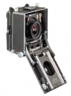

器材库 > 大幅面相机 > Master Technika 3000

规格总览
产品类型
Field Camera
规格
4×5英寸
发布日期
未知
其他规格
皮腔伸缩范围
430mm
尺寸
180×180×110mm
重量
2550g
sgicool2015-04-29 16:105 分
操作性 5.00功能性 5.00美观性 5.00趣味性 5.00耐用性 5.00性价比 5.00
枫叶枫叶2014-05-23 10:194.83 分
操作性 5.00功能性 5.00美观性 5.00趣味性 5.00耐用性 5.00性价比 4.00
nikonjeep2011-08-16 08:224.67 分
操作性 5.00功能性 5.00美观性 5.00趣味性 5.00耐用性 5.00性价比 3.00
行摄紫蓝2008-08-28 11:034.33 分
操作性 4.00功能性 4.50美观性 4.50趣味性 4.00耐用性 4.50性价比 4.50
枫叶枫叶2008-05-14 15:20
强力变焦2007-08-19 11:164.5 分
操作性 4.50功能性 4.00美观性 5.00趣味性 5.00耐用性 5.00性价比 3.50
演员2006-04-24 11:395 分
操作性 5.00功能性 5.00美观性 5.00趣味性 5.00耐用性 5.00性价比 5.00
yunyunyu2005-08-24 09:254.58 分
操作性 4.50功能性 5.00美观性 5.00趣味性 5.00耐用性 5.00性价比 3.00
pang30002005-04-27 23:274.58 分
操作性 4.50功能性 4.50美观性 5.00趣味性 5.00耐用性 5.00性价比 3.50
中灰镜2005-04-09 23:594.58 分
操作性 4.50功能性 4.50美观性 5.00趣味性 4.50耐用性 5.00性价比 4.00
产品图 / 样片
Master Technika 特艺3000